Komplizierte Füllfläche
complicated-fill-area
Zusammenfassung
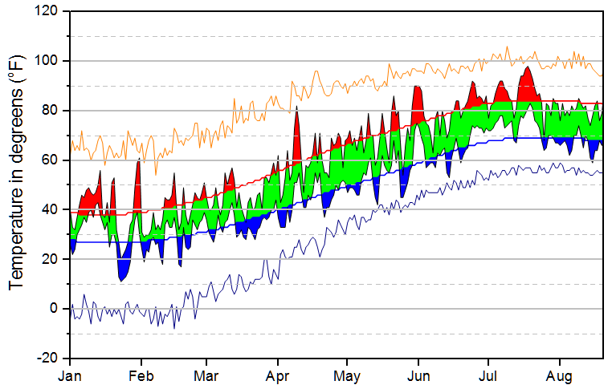
Origin-Version mind. erforderlich: 9.1 SR0
Was Sie lernen werden
- Fläche zwischen Kurven mit zwei verschiedenen Farben füllen
- Geordnete Zeichnungsabfolge zum Implementieren von komplexen Diagrammfüllungen verwenden
Hauptdiagramm erstellen
Dieses Tutorial basiert auf dem Projekt: <Origin-Verzeichnis>\Samples\Tutorial Data.opj. Beachten Sie, dass dieses Tutorial zahlreiche Schritte zum Erzeugen eines komplexen Diagramms erfordert. Bitte beachten Sie, dass dies kein grundlegendes Origin-Tutorial zur grafischen Darstellung ist.
- Öffnen Sie das Projekt Tutorial Data.opj und navigieren Sie zu dem Ordner Multiple Fill Area.
- Aktivieren Sie die Arbeitsmappe Book2, Sheet1. Markieren Sie die Spalten C bis F. Klicken Sie dann auf Zeichnen: Einfache 2D: Liniendiagramm. Es wird ein gruppiertes Liniendiagramm erzeugt.
- Markieren und löschen Sie den Y-Achsentitel und das Legendenobjekt aus dem Diagramm.
- Klicken Sie zum Öffnen des Dialogs Details Zeichnung doppelt auf eine Zeichnung. Gehen Sie zur Registerkarte Linie und setzen Sie die Transparenz auf 100 %.
- 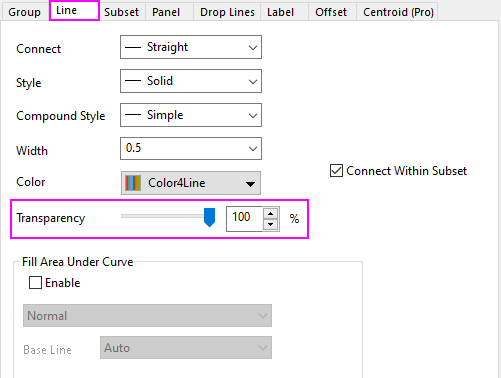
- Wechseln Sie zur Registerkarte Gruppe und setzen Sie den Bearbeitungsmodus auf Unabhängig, klicken Sie auf Anwenden. Dies ermöglicht uns, die benutzerdefinierten Modi zum Füllen der Flächen für jede Linie festzulegen.
- 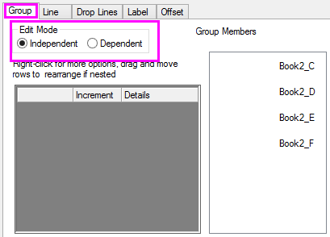
- Markieren Sie die erste Zeichnung im linken Bedienfeld von Details Zeichnung. Gehen Sie zur Registerkarte Linie, aktivieren Sie Fläche unter Kurve füllen und wählen Sie Bis zur nächsten Datenzeichnung füllen - Obige und untere Farben.
- 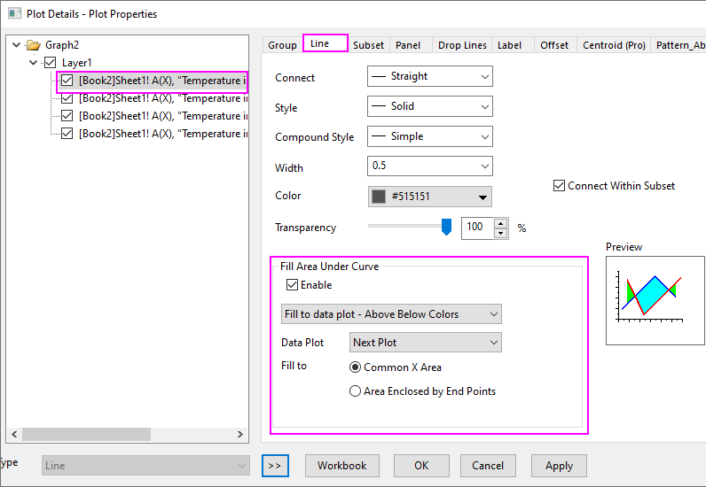
- Gehen Sie zur Registerkarte Muster_oberhalb und wählen Sie die Einstellungen, wie unten gezeigt.
- 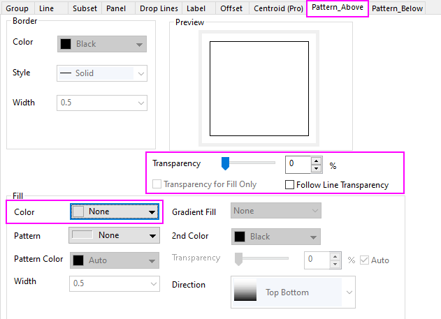
- Wechseln Sie zur Registerkarte Muster_unterhalb und setzen Sie Füllfarbe auf Rot, klicken Sie dann auf Anwenden. Die erste gefüllte Teil unserer Zeichnung wird hinzugefügt.
- 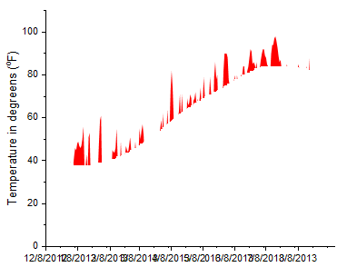
- Markieren Sie die zweite Zeichnung im linken Bedienfeld von Details Zeichnung. Gehen Sie zur Registerkarte Linie, aktivieren Sie Fläche unter Kurve füllen und wählen Sie Bis zur nächsten Datenzeichnung füllen - Eine Farbe.
- 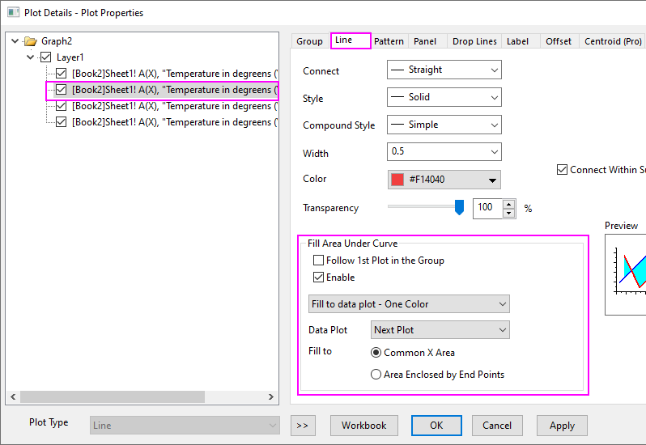
- Wählen Sie auf der Registerkarte Muster die Einstellungen, wie unten zu sehen.
- 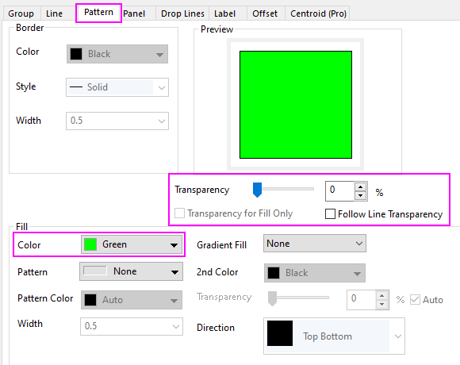
- Wiederholen Sie die Schritte 6~8 für die dritte Zeichnung im Diagramm mit Ausnahme der Registerkarte Muster_oberhalb. Setzen Sie die Füllfarbe auf Kein und Transparenz auf 0 (Sie müssen das Kontrollkästchen Linientransparenz folgen deaktivieren). Setzen Sie auf der Registerkarte Muster_unterhalb die Füllfarbe auf Blau.
- Ihr gestapeltes Füllflächendiagramm sollte jetzt folgendermaßen aussehen:
- 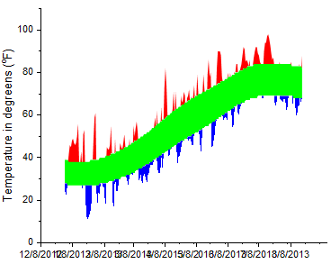
 |
Beachten Sie, dass Sie als eine Alternative zu den Bedienelementen der Registerkarte Linie im Dialog Details Zeichnung auch zwei beliebige Zeichnungen im Diagrammlayer mit Hilfe der Strg-Taste auswählen können und dann die Füllungen zwischen den ausgewählten Kurven mittels der Minisymbolleistenschaltflächen anwenden.

|
Schritte zum Entfernen von sich überschneidenden Füllflächen
In dem gerade erstellten Diagramm gibt es einige sich überschneidende Füllflächen, die nicht erwünscht sind. Wir verbergen sie, indem wir eine weiße Füllfläche hinzufügen, um sie abzudecken. Wir verwenden den Dialog Layerinhalt, um Datensätze zum Diagramm hinzuzufügen, einige von ihnen mehrmals.
- Wählen Sie im Menü Grafik: Layerinhalt. Verwenden Sie die Schaltfläche mit dem rechts weisenden Pfeil in der Mitte des Dialogs zum Hinzufügen dieser Zeichnungen zu den Datensätzen auf der rechten Seite des Dialogs.
- 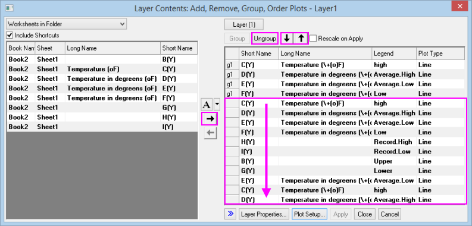
- Verwenden Sie die Schaltfläche Gruppe auflösen, um die Gruppierung von Zeichnungen, die als Gruppen eingefügt werden, aufzuheben. Die Gruppierung wird durch gn neben jedem Datensatz gekennzeichnet. Sie möchten sicherstellen, dass keine Gruppen existieren (Sie können die ersten vier Datensätze, die hinzugefügt wurden, ignorieren).
- Ordnen Sie die hinzugefügten Zeichnungen genau in der gezeigten Reihenfolge an. Verwenden Sie die Schaltflächen mit den nach oben und unten weisenden Pfeilen oberhalb der Liste auf der rechten Seite, um die Liste nach Bedarf neu zu ordnen. Beachten Sie, dass nur ungruppierte Zeichnungen unabhängig angeordnet werden können. Wenn Ihre Liste wie im Bild oben aussieht, klicken Sie auf OK, um den Dialog Layerinhalt zu schließen.
- Klicken Sie zum Öffnen des Dialogs Details Zeichnung doppelt auf die Datenzeichnung.
- Markieren Sie im linken Bedienfeld von Details Zeichnung die fünfte Zeichnung unten (C(Y)). Aktivieren Sie auf der Registerkarte Linie das Kontrollkästchen Fläche unter Kurve füllen und wählen Sie in der Auswahlliste Bis zur nächsten Datenzeichnung füllen - Obige und untere Farben, Farbe = Rot und Transparenz = 0. Setzen Sie auf der Registerkarte Muster_oberhalb die Transparenz = 0 und die Füllfarbe = Weiß. Setzen Sie auf der Registerkarte Muster_unterhalb die Füllfarbe auf Rot.
- Markieren Sie die sechste Zeichnungen unten (D(Y)) und setzen Sie die Farbe = Rot und die Transparenz = 0.
- Markieren Sie die siebte Zeichnung unten (E(Y)). Aktivieren Sie auf der Registerkarte Linie das Kontrollkästchen Fläche unter Kurve füllen und wählen Sie in der Auswahlliste Bis zur nächsten Datenzeichnung füllen - Obige und untere Farben, Farbe = Rot und Transparenz = 0. Setzen Sie auf der Registerkarte Muster_oberhalb die Füllfarbe auf Weiß und die Transparenz auf 0. Setzen Sie auf der Registerkarte Muster_unterhalb die Füllfarbe auf Blau.
- Klicken Sie für die achte Zeichnung unten (F(Y)) auf die Registerkarte Linie und setzen Sie die Farbe auf Schwarz und die Transparenz auf 0.
- Klicken Sie für die neunte Zeichnung unten (H(Y)) auf die Registerkarte Linie und setzen Sie die Farbe auf Orange und die Transparenz auf 0.
- Klicken Sie für die zehnte Zeichnung unten (I(Y)) auf die Registerkarte Linie und setzen Sie die Farbe auf Blau und die Transparenz auf 0.
- Klicken Sie die elfte und die zwölfte Zeichnung, (B(Y) bzw. G(Y)) auf die Registerkarte Linie und setzen Sie die Farbe der Linie auf Grau und die Transparenz auf 0.
- Klicken Sie für die dreizehnte Zeichnung unten (E(Y)) auf die Registerkarte Linie und wählen Sie in der Auswahlliste Bis zur nächsten Datenzeichnung füllen - Obige und untere Farben, Transparenz = 0. Setzen Sie auf der Registerkarte Muster_oberhalb die Füllfarbe = Keine sowie die Transparenz = 0 und auf der Registerkarte Muster_unterhalb sowie die Füllfarbe = Weiß.
- Klicken Sie für die vierzehnte Zeichnung unten (C(Y)) auf die Registerkarte Linie und setzen Sie die Farbe auf Schwarz und die Transparenz auf 0.
- Klicken Sie für die fünfzehnte (letzte) Zeichnung unten auf die Registerkarte Linie und setzen Sie die Farbe = Rot und die Transparenz = 0.
- Schließen Sie den Dialog Details Zeichnung und klicken Sie auf die Schaltfläche Neu Skalieren
 auf der Symbolleiste Diagramm. Ihr Diagramm sollte ungefähr folgendermaßen aussehen. Um Ihr Diagramm zu verschönern, fahren Sie mit dem letzten Abschnitt fort.
auf der Symbolleiste Diagramm. Ihr Diagramm sollte ungefähr folgendermaßen aussehen. Um Ihr Diagramm zu verschönern, fahren Sie mit dem letzten Abschnitt fort.
-
- 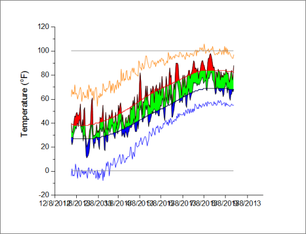
Weitere benutzerdefinierte Anpassungen
- Klicken Sie doppelt auf die Hilfsstrichsbeschriftungen der X-Achse (unten, horizontal). Der Dialog X-Achse wird geöffnet. Klicken Sie auf die Registerkarte Skalierung und ändern Sie den Datenbereich von 01.01.2013 bis 20.08.2013. Setzen Sie die Anzahl der kleinen Hilfsstriche = 0.
- Legen Sie auf der Registerkarte Beschriftung der Hilfsstriche die Anzeige so fest, dass eine Abkürzung für Monat mit drei Buchstaben gezeigt wird (z. B. Apr).
- Klicken Sie auf Anwenden.
- Um einen Rahmen um den gesamten Diagrammlayer zu zeichnen, wählen Sie Ansicht: Zeige: Rahmen.
- Zuletzt klicken Sie doppelt auf die Y-Achse (links, vertikal), um die gestrichelte Linie bei der Temperatur = -10 und +110 hinzuzufügen. Klicken Sie auf die Registerkarte Referenzlinien und geben Sie Folgendes ein:
- 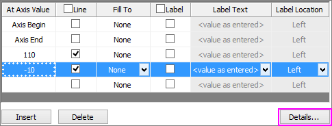
- Klicken Sie auf die Schaltfläche Details und deaktivieren Sie im Dialog Referenzlinien das Kontrollkästchen Autom. Format, setzen Sie den Stil auf Gestrichelt und die Dicke auf 1. Tun Sie dies für beide Linien, -10 und +110, und klicken Sie auf OK.
- Klicken Sie im Dialog Achsen auf OK, um den Dialog zu schließen. Ihr Diagramm sollte nun folgendermaßen aussehen:
-
- 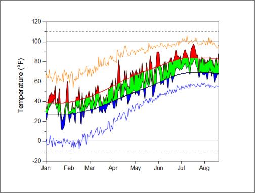